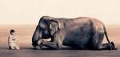

gregorycolbert_naomi
A consciência individual não ultrapassa os limites intestinais: todas
as formas de metafísicas são muletas da impotência. Por isso, cumpre
cuidar do Mundo. A minha casa, o meu jardim, o meu filho é mais
importante que todas as divindades escatológicas que tua lógica doentia
e tetraplégica possa inventar. Não fuja do imposto de renda. Não fuja
da urbanização da tua rua. Volta para tua casa. Toda arte deve dizer,
sob o risco de ser punida como martelo stalinista, o real e o que nele
fecunda. As vitrines de novas modas não superam teus olhos calmos e
meus pés compridos. Deita na tua rede e espera que venha a que chega,
fria e tátil, a inominada. Como a bailarina no cartaz, com a meia e a
hora. Sente teu peito arfar pelo cão que te esfrega a cauda e a paz.
Que a paz esteja com vocês. Sonho uma parede de mármore verde-mar e um
veleiro azul sobre as ilhas que solidam o reino. Tua graça, teu
fascínio ópio, nosso tempo de ira, a cilada de teu riso, o túnel de tua
cona toda, nossa alegria sem medo, tudo rui com o tempo – senhor dos
mistérios – senhor sério – senhor taciturno como uma tartaruga
enrugada. Onde deixaste tua vergonha e teu baton, onde eu pus o meu
melhor dia – perguntará o senhor dos anéis. E tu responderas inefável –
farto de dias, velho impotente, ainda queimas pelo que não podes ser: a
pureza da espécie, o limão do orgasmo, a ignorância do riso. Vai e vira
cera, cego e irado, que eu ainda guardo meu dia. E o tempo, roto, vai
ao mar salgar suas lágrimas. Eu vi quando o veleiro negro te veio
buscar – o senhor camaleão melancólico - com a íris fina de ódio, com
as presas sangrando de tua carne, com o gosto de teu sangue nas tripas,
ele se vinga de teu dia. Estavas, ali, carcomida, infame, com grandes
órbitas de susto, quase um graveto seco, o hálito que tanto temias em
torno, e o teu fino quase nada, quase nenhuma lágrima mais, as
lembranças do pai, e das mães que tiveste, de mim, quase com pena –
afinal um homem que não trina não pode chega à esquina – e tu sabias
que tudo era mentira, menos que o barqueiro vem e te veio feio, irado,
rasgando teu corpo e estuprando tua alma, por quê, por teres sido
infiel ao pai e à lei ou por sabor de sangue que sempre há na pedra.
Toda tua dor ainda a revisitas e cada verme no teu corpo a regurgita.
Deixaste-a para mim – o distante, o que não deu, o que não serve – para
que eu a dilate aos faustos ou aos falhos. Eu te redimo em cada palavra
que ascendo e desço a teu espírito. Te reunis só agora à tríade do amor
– o pai, a mãe e tu – sem as interseções sociais, sem as peias do
mundo, sem a vergonha e a mentira. Livre, agora sabes que a verdade é
apenas o amor: qualquer migalha de amor amai. Amai como amam os
passarinhos e os elefantes. Os tigres, entre urros e silêncios. E, para
isso, volta. Abandona a metafísica e a ausência de amor que há na pedra.